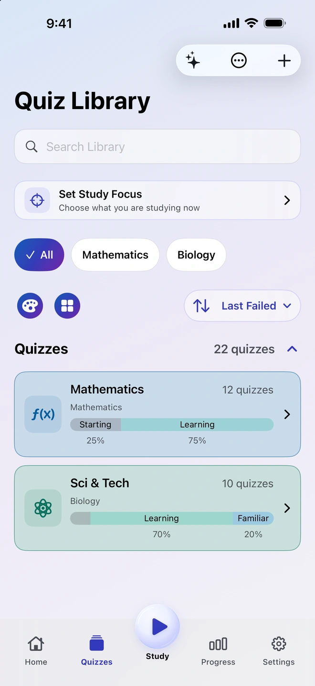
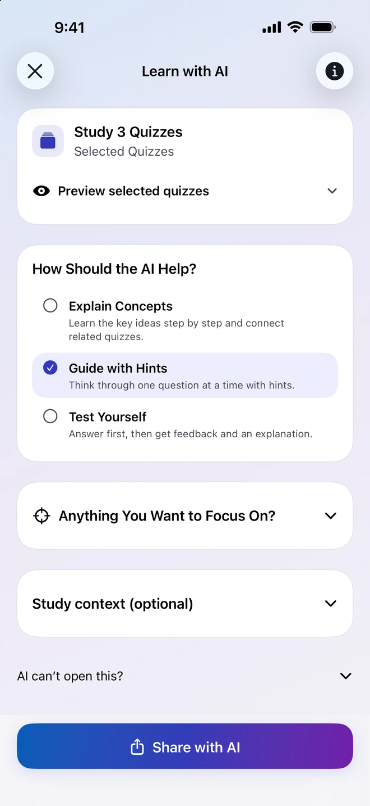
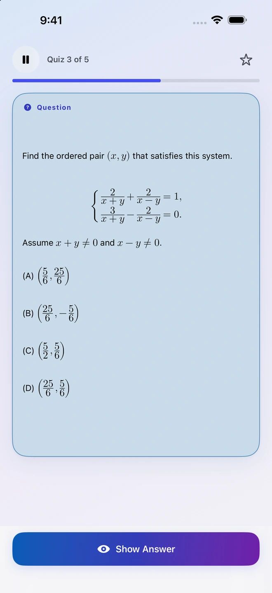
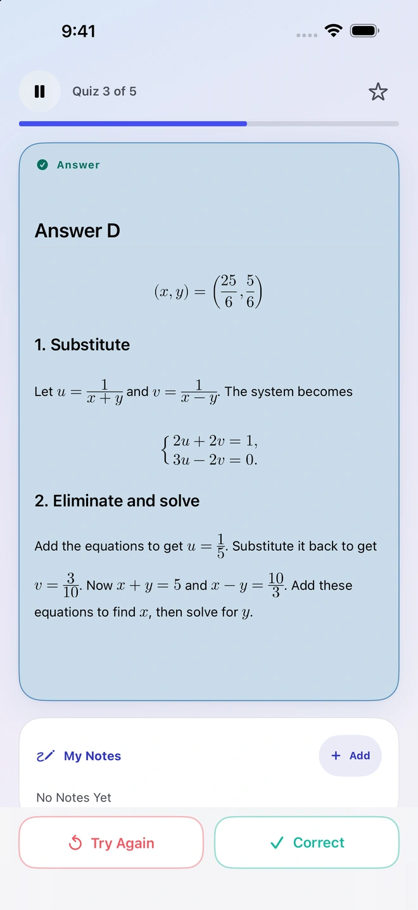
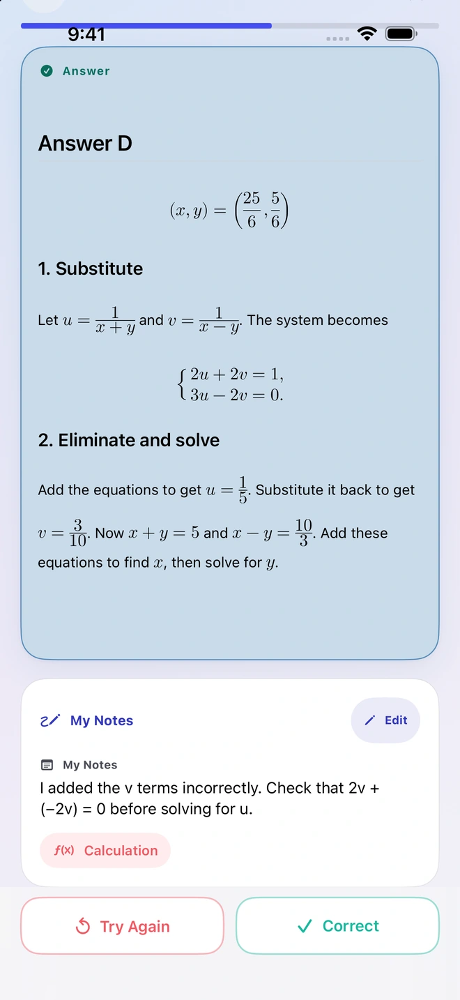
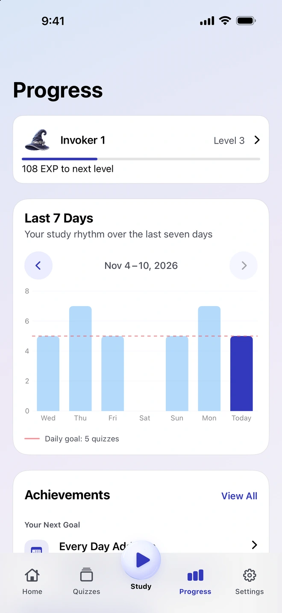

Make questions from your materials
Add a photo, PDF, document, or note. Quiz Invoker prepares the material and instructions for a compatible external AI app of your choice. Review and import the results before adding them to your library.
A study app for iPhone
Start with a textbook page, a note, or a question you missed. Bring it into Quiz Invoker, review the questions you want to keep, and make them part of your next study session.
See how it works
Keep the questions that matter to you, then come back to them over time.
Add a photo, PDF, document, or note. Quiz Invoker prepares the material and instructions for a compatible external AI app of your choice. Review and import the results before adding them to your library.
Share selected questions with an external AI app you choose. Ask it to explain the idea, give hints one step at a time, or check what you understand. You decide which files or notes to share.

Try the question first, then reveal the answer and rate your recall. Add a note about where you got stuck so it is there the next time you review.


The seven-day view shows your recent practice and daily goal. Your notes stay with the question so you can revisit both your answer and your reasoning.


You can organize and practice your quizzes offline without a Quiz Invoker account. Quiz Invoker prepares files and instructions on your device. The compatible AI app you choose handles the material you send to it.